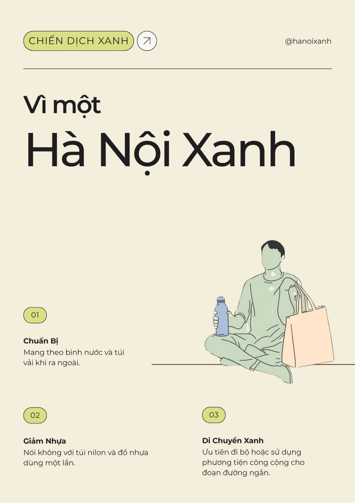

Tên dự án: Chiến dịch truyền thông "Hà Nội - Hành trình Xanh 2026"
Mục tiêu: Tạo ra bộ nội dung đa phương tiện (Bài viết blog và Poster) nhằm khuyến khích du lịch bền vững và giảm thiểu rác thải nhựa tại thành phố Hà Nội.
Sản phẩm cuối cùng: Một bài viết chuyên sâu trên Blog du lịch kèm theo 02 Poster truyền thông chất lượng cao.
Để hoàn thiện dự án này, tôi đã lựa chọn và phối hợp sử dụng 03 công cụ AI hàng đầu hiện nay nhằm tối ưu hóa từng khâu trong quy trình sản xuất nội dung số:
AI tạo văn bản: Sử dụng để lên ý tưởng độc đáo, thiết lập cấu trúc dàn ý chi tiết và tiến hành viết bản thảo nội dung thô cho bài viết blog.
AI tạo hình ảnh: Sử dụng để xử lý câu lệnh chuyển văn bản thành hình ảnh (Text-to-Image), kiến tạo các hình ảnh thị giác (Key Visual) mang tính nghệ thuật, chân thực và độc bản.
AI hỗ trợ thiết kế: Sử dụng để tự động sắp xếp bố cục đồ họa, đề xuất các palette màu sắc phù hợp định hướng và hoàn thiện sản phẩm truyền thông cuối cùng.
Dưới đây là bảng tổng hợp chi tiết các câu lệnh (prompts) đã áp dụng, kết quả nhận diện từ AI và quá trình chủ động chỉnh sửa, tinh chỉnh thủ công để đạt tính thẩm mỹ cao nhất:
| Bước thực hiện | Công cụ | Câu lệnh (Prompt) đã dùng | Kết quả từ AI & Chỉnh sửa của cá nhân |
|---|---|---|---|
| Lên ý tưởng & Dàn ý | Google Gemini | "Hãy đóng vai chuyên gia du lịch bền vững, lập dàn ý cho bài blog 'Hà Nội không rác thải nhựa'. Cần tập trung vào trải nghiệm thực tế và giải pháp cho du khách." | AI đưa ra hệ thống gồm 6 mục lớn. Tôi đánh giá tính khả thi và quyết định tinh giản loại bỏ phần số 5 liên quan đến mua sắm để tập trung sâu hơn vào trải nghiệm thực tế tại địa phương. |
| Sáng tạo hình ảnh | Nano Banana | A candid, close-up photograph capturing a sustainable traveler's reusable setup on a worn wooden table in a busy Hanoi cafe. Center frame is a branded steel water bottle (minimalist 'Hanoi Xanh' sticker) and a folded cloth tote bag. In the blurred background, a glass cup of traditional Vietnamese egg coffee sits near a window. Sunlight streams in. 35mm photography, film grain, warm tones, natural light, photojournalism style, high detail. --ar 16:9 |
AI khởi tạo thành công bộ gồm 4 bức ảnh. Tôi chọn bức ảnh số 1 có bố cục chuẩn nét nhất, tuy nhiên gam màu gốc hơi bị rực quá mức. Tôi đã đưa ảnh vào ứng dụng Photopea để giảm độ bão hòa (thông số Saturation: -13) giúp tổng thể dịu mắt và cổ kính hơn. |
| Thiết kế Poster | Canva Magic Design | Tải hình ảnh đã tinh chỉnh lên hệ thống và yêu cầu: "Thiết kế poster phong cách tối giản với thông điệp: Hà Nội Xanh." | Hệ thống tự động nhận diện khối, sắp xếp văn bản tự động để sinh mẫu. Tôi chọn ra một khuôn mẫu ưng ý nhất, tiến hành thay thế toàn bộ font chữ mặc định của AI sang font hiện đại 'Montserrat', đồng thời viết lại nội dung truyền tải theo đúng ý đồ của mình. |
Việc trực tiếp ứng dụng song hành nhiều nền tảng bổ trợ cho nhau trong dự án cho phép tôi đưa ra những đánh giá khách quan về ưu thế và giới hạn của từng công cụ:
Sản phẩm truyền thông hoàn thiện hoàn toàn không phải là sự sao chép rập khuôn, mà là kết quả của mô hình đồng sáng tạo (Human-AI Collaboration), trong đó đóng góp cá nhân của con người chiếm giữ vai trò quyết định (>60%) thông qua các khía cạnh:

Sự cải tiến mạnh mẽ trong quy trình: Thay vì tiêu tốn hàng giờ đồng hồ tìm kiếm mệt mỏi các kho ảnh có sẵn (stock photos) trên mạng internet vốn chung chung và không sát kịch bản, Nano Banana trao quyền cho nhà sáng tạo tự "chụp" ra các bức ảnh trực họa chuẩn xác 100% ý tưởng trong đầu, giúp rút ngắn tối đa thời gian sản xuất nội dung số.
Việc làm chủ và tối ưu hóa năng lực từ các công cụ Generative AI tiên tiến không đơn thuần chỉ dừng lại ở kỹ năng gõ câu lệnh prompt một cách cơ học, mà cốt lõi nằm ở khả năng điều phối, kết nối tinh tế các hệ sinh thái công nghệ khác nhau nhằm tạo ra những giá trị mới mẻ.
Chiến dịch truyền thông đầy ý nghĩa mang tên "Hà Nội - Hành trình Xanh 2026" là minh chứng thực tế rõ nét khẳng định: AI hoàn toàn có thể trở thành đòn bẩy nâng tầm năng lực sáng tạo vô hạn của cá nhân, miễn là chúng ta nắm vững thế chủ động kiểm soát và khéo léo lồng ghép dấu ấn cá nhân sâu sắc vào từng đường nét sản phẩm.